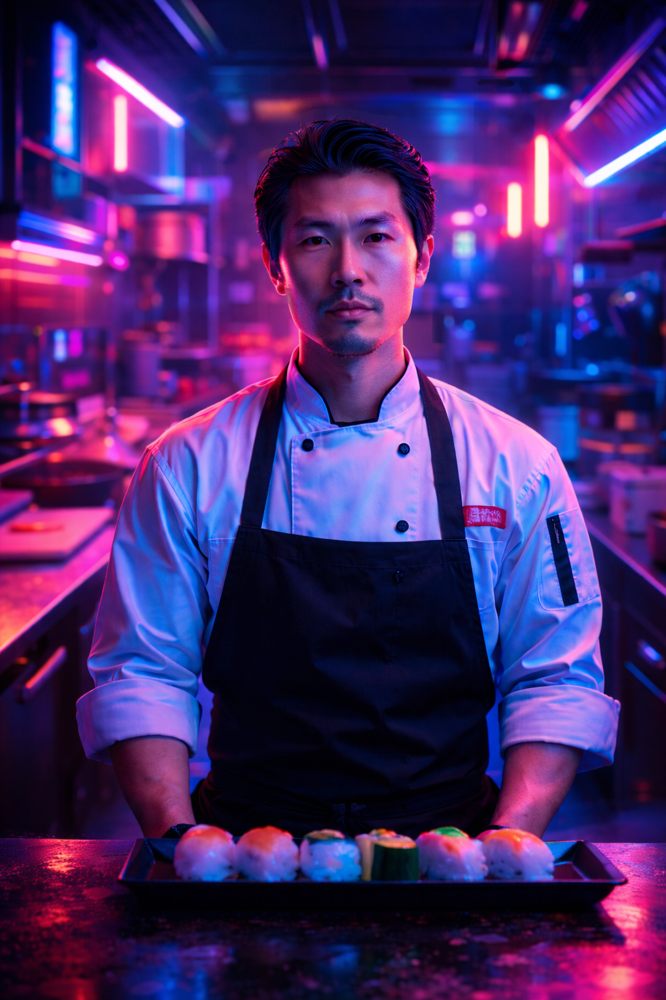
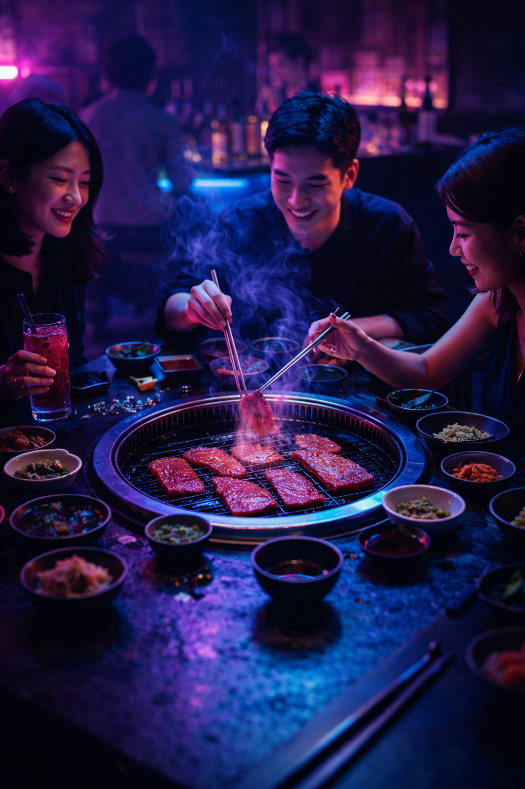
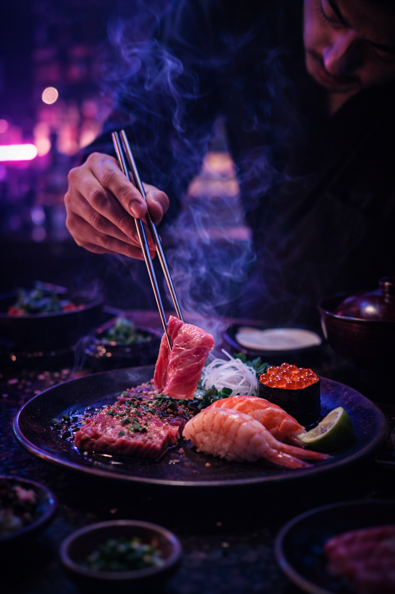
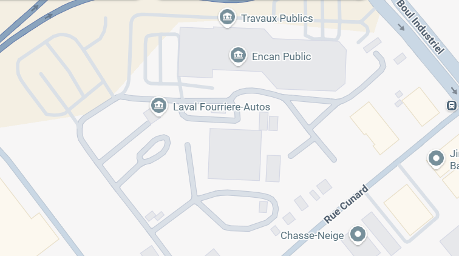

高橋浩


Originaire de Tokyo, Hiroshi Takahashi s'est formé auprès de grands chefs et dans des restaurants de sushi renommés au Japon. Après un perfectionnement en France et au Québec, il a ouvert son propre établissement où il marie avec créativité les traditions culinaires japonaises et les influences occidentales.


La cuisine japonaise est une question de respect : respect du produit, du geste et des convives. Il prône une approche minimaliste où chaque élément est parfaitement exécuté pour révéler le meilleur de l'ingrédient. La simplicité et la précision sont au cœur de ses créations.
Né de la vision du chef Hiroshi Takahashi, Izakaya Hiroshi marie tradition japonaise et influences occidentales. Après un parcours entre Tokyo, Kyoto, la France et le Québec, il crée un lieu intime où sushi et grillades au charbon célèbrent le respect du produit. Chaque détail reflète l'omotenashi, offrant une expérience authentique, raffinée et chaleureuse.
CONTACTEZ NOUS
